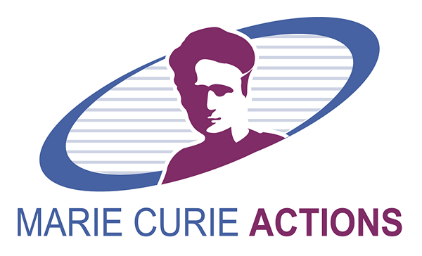
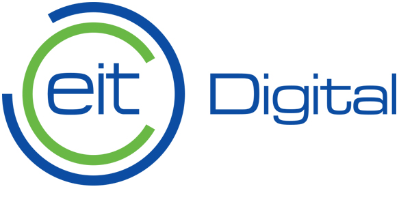
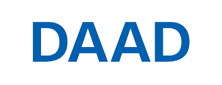
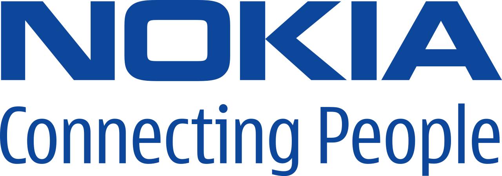

|
Aaron Ding, PhD Director,  & H2020 SPATIAL (€5M) & H2020 SPATIAL (€5M)Senior Associate Professor (UHD1), TU Delft Associate Professor, University of Helsinki Editorial Board, ACM Transactions on IoT Editorial Board, Springer Nature Computing Founder, FCN Series Founder, ACM EdgeSys Google Scholar Email: Aaron.Ding (at) tudelft.nl |
| Home | Publications | Projects | Education | Group | Services | Code+Data | Misc |
Group Highlight
"The Principle of Science" -- Richard Feynman
I lead the Cyber Physical Intelligence Laboratory CPI Lab is always open to enthusiastic PhD, MSc students and post-doctoral scholars. Projects and funding are available. If you are interested, do not hesitate to contact me. Support for post-doctoral scholars is available via a number of fellowship schemes such as Marie Curie Fellowships. Just to remind the best way for students to join CPI is to participate in thesis projects & courses offered at TU Delft. For those interested in R&D at CPI, I strongly recommend the CPI guidelines. in the Department of Engineering Systems and Services at TU Delft. Our lab focuses on Edge AI solutions for cyber-physical systems in smart health, energy and mobility domains through interdisciplinary and multidisciplinary research across science, engineering and design disciplines. The projects run by CPI Lab are at the intersection of distributed computing, data intelligence, networking and security. CPI Lab is affiliated with Cambridge NetOS Group, Columbia IRT Lab, 4TU Center for Resilience Engineering, Delft Power Web Institute, Delft Transport & Mobility Institute, Delft IoT Consortium, Delft Cyber Security Group, Delft AI DeMoS Lab, and TU Munich Connected Mobility Lab.
Funding & Supports
Currently managing EU Horizon grants (€5M + €5.5M) as Consortium Director and PI, my research has been supported by generous funding and gifts from Nokia Foundation, EC Horizon 2020, Marie Curie ITN, EIT Digital, MRDH, TU Delft Safety and Security Institute, DAAD, Bavaria California Technology Center, TUM Global Incentive Fund, Academy of Finland, and Tekes. Numerous projects are in collaboration and supported by industrial partners including Nokia, Intel, Broadcom, Ericsson, Deutsche Telekom, Telia, Deloitte, KPMG, EY, PostNL and F-Secure.     
News & Awards
 CPI won prestigious EU Marie Curie Grant of €1.5M as PI to innovate on 6G (2024-2028)
CPI won prestigious EU Marie Curie Grant of €1.5M as PI to innovate on 6G (2024-2028) CPI won prestigious EU Marie Curie ITN of €4M as PI to innovate on Sustainable Edge AI (2020-2025)
CPI won prestigious EU Marie Curie ITN of €4M as PI to innovate on Sustainable Edge AI (2020-2025) CPI won EU Horizon Grant of €5M on Trustworthy Edge AI as scientific director and coordinator (2021-2024)
CPI won EU Horizon Grant of €5M on Trustworthy Edge AI as scientific director and coordinator (2021-2024) CPI successfully hosted ACM EdgeSys with Volker Hilt (Bell Labs Director)
CPI successfully hosted ACM EdgeSys with Volker Hilt (Bell Labs Director) CPI on Chairing Committee of Top-Tier ACM SIGCOMM, CoNEXT, UbiComp, MobiCom, MobiSys & HotNets
CPI on Chairing Committee of Top-Tier ACM SIGCOMM, CoNEXT, UbiComp, MobiCom, MobiSys & HotNets Dr. Wiebke Hutiri successfully defended her PhD with Cum Laude and joined SONY AI in Switzerland
Dr. Wiebke Hutiri successfully defended her PhD with Cum Laude and joined SONY AI in Switzerland Dr. Vittorio Cozzolino successfully defended his PhD and joined Huawei Research in Germany
Dr. Vittorio Cozzolino successfully defended his PhD and joined Huawei Research in Germany Dr. Michael Haus successfully defended his PhD and joined Audi Headquarter in Germany
Dr. Michael Haus successfully defended his PhD and joined Audi Headquarter in Germany
{kind=link}
CPI Members
Director
Principal Fellows
Postdoc and Senior Researchers
PhD Researchers
Project | Teaching Assistants
MSc BSc Students
Affiliated Members
Alumni & Whereabouts
Thesis Projects
Open Topics
Selected Theses - completed at CPI 
CPI Guidelines
Research & Experiment
Scientific Venues to Follow
Best Papers
Career & Tips
Hacking Path
{kind=link}
International Collaborators
University of Cambridge
Columbia University
Technical University of Munich
University of Helsinki
Carnegie Mellon University
University of Oslo
University of Florida
Aalto University
Erasmus Medical Center Rotterdam
University of California, Irvine
University College Dublin
University of Tartu
Hong Kong University of Science and Technology
Tsinghua University, Beijing
Peking University, Beijing
Fudan University, Shanghai
Tongji University, Shanghai
Apple
Ericsson
Nokia Bell Labs
Nordic Semiconductor
Telefónica
Meta
VTT
Fraunhofer FOKUS